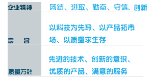

关于我们
北京向导科技有限公司是国家高新技术企业，也是中关村高新技术企业，2004年5月成立，致力于工业电子商务、智慧软件、智能物联网、工业测控等产品研发、生产和运营；下设三个事业部，分别是工业互联网事业部、个性定制事业部、智能制造事业部，公司总部位于北京市海淀区国家信息产业基地上地科技园区，向导科技始终秉承创新发展道路，经过十二年的不断艰苦奋斗，目前企业取得50余项著作权、专利，4项独有互联网技术5项物联网及测控独有技术。 向导科技有一支梦想团队，致力于打造工业互联网百年企业，互联网发展趋势已经从消费办公向生产建设方向发展，生产建设的互联网服务就是工业互联网服务，工业互联网涵盖大数据、工业电商、个性定制、物联网、智能制造、云计算等，北京向导科技有限公司已经为未来的发展奠定了非常好的技术、经验、商业模式、团队基础，已经是工业品选型订购平台、集采平台解决方案、智能制造、智能仪表优秀的缔造者，每年有上万家企业与向导形成合作，未来我们坚信向导的客户将得到最好服务和信赖. 公司先后通过了ISO9001:2008质量管理体系认证、ISO14001:2004环境管理体系认证、GB/T 28001-2012职业健康安全管理体系。
